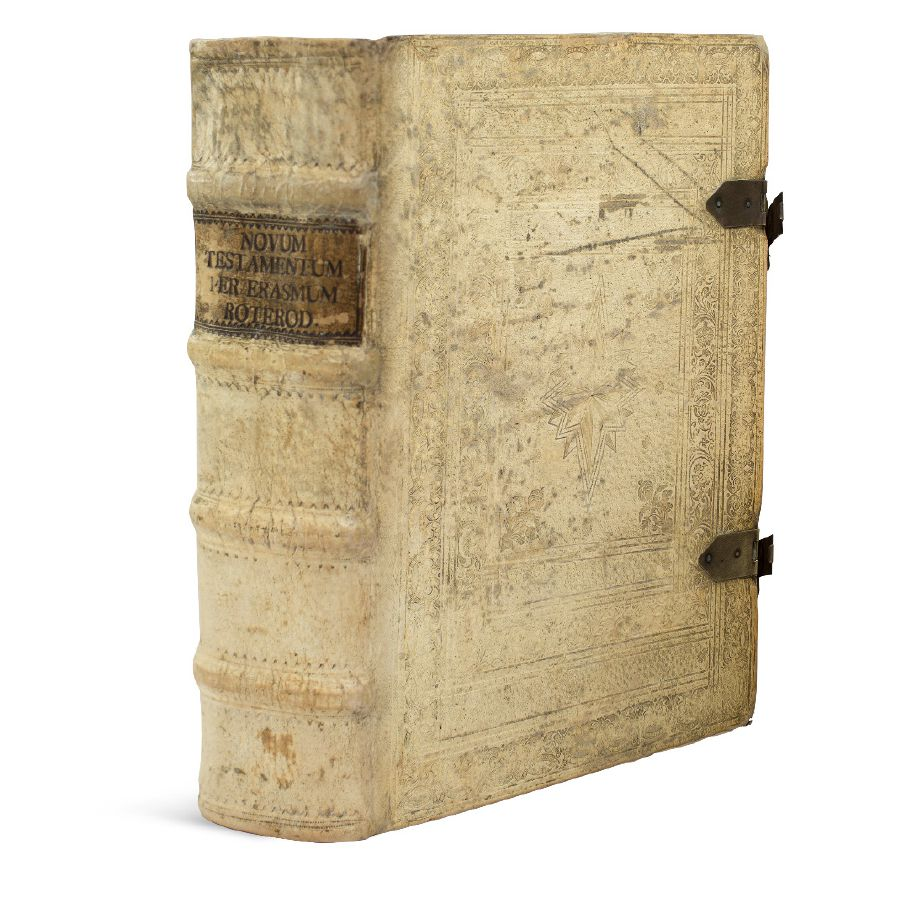

IN HIS day, Desiderius Erasmus (c. 1469-1536) was at first admired as the most brilliant of European scholars, then vilified as either a coward or a heretic. Caught up in a tempest of religious debate, he dared to expose the faults and abuses that existed in Catholicism as well as among its would-be reformers. Today, he is recognized as a key figure in the transformation of Europe’s religious landscape. How so?
STUDIES AND BELIEFS
Erasmus’ mastery of Greek and Latin allowed him to compare Latin translations of the Bible, such as the Latin Vulgate, with early Greek manuscripts of the Christian Greek Scriptures, commonly known as the New Testament. He became convinced that Bible knowledge was vital. To that end, he asserted that the Holy Scriptures should be translated into other languages common in his day.
Erasmus promoted internal renewal of the Catholic Church, since he believed Christianity ought to be a life course, not a mere observation of meaningless rites. As a result, when reformers began to protest and demand change within the Church of Rome, he became the object of Catholic suspicion.
Erasmus dared to expose the faults and abuses in Catholicism and among reformers
In his writings Erasmus satirically exposed clergy abuses, their pompous lifestyle, and the ambition of popes who applauded wars. He differed with corrupt clergymen who used church customs—such as confession of sins, the worship of the saints, fasting, and pilgrimages—to exploit believers. He also disagreed with such church practices as the sale of indulgences and enforced celibacy.
GREEK TEXT OF THE NEW TESTAMENT
In 1516, Erasmus published his first edition of the New Testament in Greek—the first printed copy of the Christian Greek Scriptures ever to be released. Erasmus’ work included annotations as well as his own translation of the Christian Greek Scriptures into Latin, which differed from the Vulgate. Over some time, he continued to revise his version, leading to a final product that included even more dramatic departures from the text of the Latin Vulgate.

Erasmus’ Greek New Testament
One of the differences was at 1 John 5:7. To support the unscriptural teaching of the Trinity, some spurious words known as the comma Johanneum had been added to the Vulgate. They read: “In heaven, the Father, the Word, and the Holy Ghost: and these three are one.” However, Erasmus excluded those words from his first two editions of the New Testament because none of the Greek manuscripts he consulted contained them. He was later pressured by the church to include them in his third edition.
Improved editions of Erasmus’ Greek New Testament provided the basis for better translations into European languages. Martin Luther, William Tyndale, Antonio Brucioli, and Francisco de Enzinas used them to translate the Greek Scriptures into German, English, Italian, and Spanish respectively.
Erasmus lived through a period of momentous religious turmoil, and his Greek New Testament was considered an invaluable aid by the Protestant Reformers. Erasmus himself was considered by some to be a reformer, until, that is, the Reformation began in fearsome earnest. Then he refused to take sides in the great theological debates that followed. Interestingly, over 100 years ago, scholar David Schaff wrote that Erasmus “died in isolation, without a party. The Catholics would not claim him; the Protestants could not.”